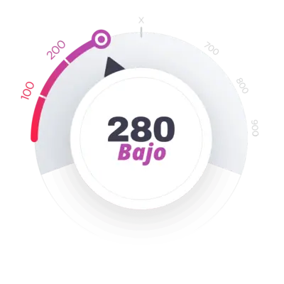

¿CUÁNTOS AÑOS TIENES?
- 18 – 29 años
- 30 – 39 años
- 40 – 49 años
- 50 – 59 años
- +60 años
Aviso de Privacidad: Las respuestas de este cuestionario son 100 % anónimas y confidenciales.
¿Has entrenado los músculos del suelo pélvico?
- Sí, pero no de forma constante
- No, solo lo he escuchado
- No, nunca los he entrenado
- ¿Qué son los músculos del suelo pélvico?
Aviso de Privacidad: Las respuestas de este cuestionario son 100 % anónimas y confidenciales.
¿LO SABÍAS?
¡Tu capacidad de durar más depende del fortalecimiento de los músculos del suelo pélvico!
La duración de tu relación sexual está directamente ligada a la fuerza de estos músculos. Fortalecerlos es esencial para retrasar la eyaculación y prolongar el tiempo en la cama a tu gusto.
Aviso de Privacidad: Las respuestas de este cuestionario son 100 % anónimas y confidenciales.
¿LO SABÍAS?
Erecciones más fuertes gracias al suelo pélvico
Un suelo pélvico fortalecido es clave para una erección saludable. Al aprender a controlarlo, aumentas el flujo sanguíneo al pene y mejoran las erecciones.
Aviso de Privacidad: Las respuestas de este cuestionario son 100 % anónimas y confidenciales.
¿Cómo calificarías tu desempeño sexual?
- Muy insatisfecho
- Insatisfecho
- Aceptable, pero quiero mejorar
- No lo sé
Aviso de Privacidad: Las respuestas de este cuestionario son 100 % anónimas y confidenciales.
Lleva tu vida sexual a un nuevo nivel con el Protocolo Vitamax
Primera fase del diagnóstico:
Aviso de Privacidad: Las respuestas de este cuestionario son 100 % anónimas y confidenciales.
¿Cuál es la duración promedio de tus relaciones sexuales?
- Menos de 2 minutos
- 2 a 5 minutos
- Menos de 10 minutos
- No tengo relaciones sexuales
Aviso de Privacidad: Las respuestas de este cuestionario son 100 % anónimas y confidenciales.
¿Con qué frecuencia terminas antes de lo que quisieras?
- Siempre
- A veces
- Prefiero no responder
Aviso de Privacidad: Las respuestas de este cuestionario son 100 % anónimas y confidenciales.
EL PROTOCOLO VITAMAX
AYUDA A AUMENTAR LA DURACIÓN PROMEDIO HASTA 7 VECES
Este método ha ayudado a miles de hombres a prolongar significativamente el tiempo de sus relaciones, mejorando su vida íntima incluso con el paso de los años.
Aviso de Privacidad: Las respuestas de este cuestionario son 100 % anónimas y confidenciales.
¿Tienes erección completa cada vez que tienes sexo?
- No, rara vez
- Sí, pero me gustaría que fuera más firme
- A veces, pero se pierde durante la relación
- Prefiero no responder
Aviso de Privacidad: Las respuestas de este cuestionario son 100 % anónimas y confidenciales.
8 de cada 10 hombres
mejoraron su desempeño sexual con el PROTOCOLO VITAMAX
“Noté los primeros resultados significativos en solo 4 semanas y ahora no quiero parar. ¡No recuerdo la última vez que disfruté tanto mi vida íntima!”
— Miguel Barajas
Aviso de Privacidad: Las respuestas de este cuestionario son 100 % anónimas y confidenciales.
¿Cuál es tu estado civil?
- Casado
- En pareja
- Soltero
- Prefiero no responder
Aviso de Privacidad: Las respuestas de este cuestionario son 100 % anónimas y confidenciales.
¿Cuántas veces, en promedio, tienes actividad sexual al mes?
- No tengo actividad sexual
- Menos de 3 veces al mes
- Menos de 10 veces al mes
- Más de 10 veces al mes
- Prefiero no responder
Aviso de Privacidad: Las respuestas de este cuestionario son 100 % anónimas y confidenciales.
¿Has notado una disminución de la libido en el último año?
- Sí, considerable
- Tal vez, no estoy seguro
- No, pero quiero más
- No lo sé
Aviso de Privacidad: Las respuestas de este cuestionario son 100 % anónimas y confidenciales.
¿Has tomado pastillas para mejorar tu desempeño sexual?
- Sí, con frecuencia
- A veces, pero sin gran efecto
- No, nunca
- Prefiero no responder
Aviso de Privacidad: Las respuestas de este cuestionario son 100 % anónimas y confidenciales.
El Protocolo Vitamax es mejor que los medicamentos
Un enfoque sin fármacos que ofrece beneficios reales.
Aviso de Privacidad: Las respuestas de este cuestionario son 100 % anónimas y confidenciales.
¿Bebes alcohol?
- Sí, más de lo que debería
- Tomo con frecuencia
- Intento moderar, pero fallo
- Bebo raramente
- No bebo
Aviso de Privacidad: Las respuestas de este cuestionario son 100 % anónimas y confidenciales.
¿Fumas?
- Sí
- No
- A veces
Aviso de Privacidad: Las respuestas de este cuestionario son 100 % anónimas y confidenciales.
¿Sigues alguna dieta?
- Sí, intento comer saludable
- Sí, pero a veces como comida chatarra
- No, no me preocupo por la dieta
Aviso de Privacidad: Las respuestas de este cuestionario son 100 % anónimas y confidenciales.
¿Cuál es tu nivel de actividad física?
- Hago ejercicio todos los días
- Hago ejercicio de vez en cuando
- Poca actividad física
- No hago ejercicio
Aviso de Privacidad: Las respuestas de este cuestionario son 100 % anónimas y confidenciales.
¿Cómo evaluarías tu estado de ánimo recientemente?
- Terrible, mucho estrés
- Moderado, poco estrés
- Bajo, con mucha presión y ansiedad
- Difícil de describir
Aviso de Privacidad: Las respuestas de este cuestionario son 100 % anónimas y confidenciales.
¡Estás en buenas manos!
✔️El PROTOCOLO VITAMAX fue desarrollado por especialistas reconocidos en salud sexual masculina.
✔️Basado en técnicas científicamente comprobadas, incluye consejos prácticos de coaches sexuales altamente cualificados.
✔️Miles de hombres en todo el mundo transformaron su vida sexual con este método.
✔️Todos los programas se personalizan para adaptarse a TUS objetivos.
¿Qué hace que nuestro programa sea tan único?
✔️Solo 5 minutos al día para notar resultados.
✔️Entrena donde quieras: casa, oficina o caminando.
✔️Ejercicios discretos, nadie lo notará.
✔️El programa evoluciona a diario con tu progreso.
✔️Incluye teoría, práctica y un plan diario paso a paso.
✔️El 75 % de los usuarios ve resultados en menos de 4 semanas.
Analizando tus respuestas…
Generando tu diagnóstico personalizado…SCORE DE SALUD SEXUAL
Esta puntuación es una herramienta interactiva de autoevaluación que te indica tu estado actual basado en tus respuestas.
Puntaje General: 280 – Nivel Bajo
RESULTADOS DEL DIAGNÓSTICO:
Equilibrio Hormonal
Parece haber signos de desequilibrio hormonal. Reportaste una disminución significativa en tu desempeño sexual y poca actividad física, lo que puede impactar directamente tus niveles de testosterona.
Desempeño Sexual
Reportaste dificultades ocasionales para mantener una erección completa y una corta duración de las relaciones, lo que indica baja sensibilidad sexual y posible disfunción eréctil leve. Esto puede estar influenciado por factores físicos (flujo sanguíneo insuficiente) y psicológicos.
Suelo Pélvico
Indicaste que no entrenas los músculos del suelo pélvico y no conocías su importancia. Estos músculos son esenciales para el control de la eyaculación y la calidad de las erecciones. Su debilidad puede provocar eyaculación precoz y dificultad para mantener la erección.
Aspectos Psicológicos
Tus niveles de estrés y ansiedad son elevados. El impacto emocional, incluida la ansiedad de desempeño, es una de las causas más comunes de problemas sexuales como disfunción eréctil y eyaculación precoz. El estrés crónico también está relacionado con la disminución de la libido.
ANÁLISIS FINAL:
Tu diagnóstico indica varios problemas que están afectando tu salud sexual.
Estás en una situación crítica y, si no tomas medidas inmediatas, estos problemas pueden agravarse, provocando consecuencias graves como disfunción eréctil permanente, fuerte disminución de la libido e incluso pérdida total de control durante el sexo.
RECUPERA TUDESEMPEÑO AHORA